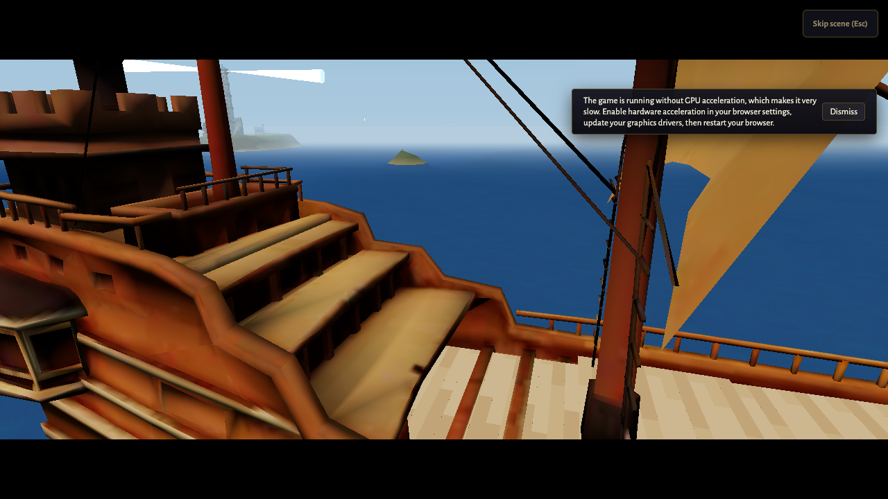
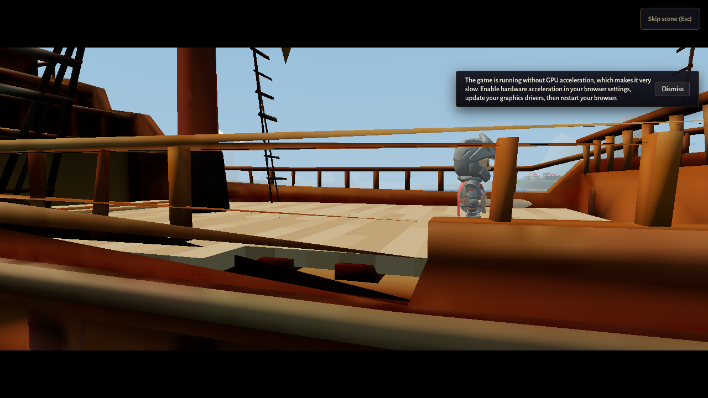
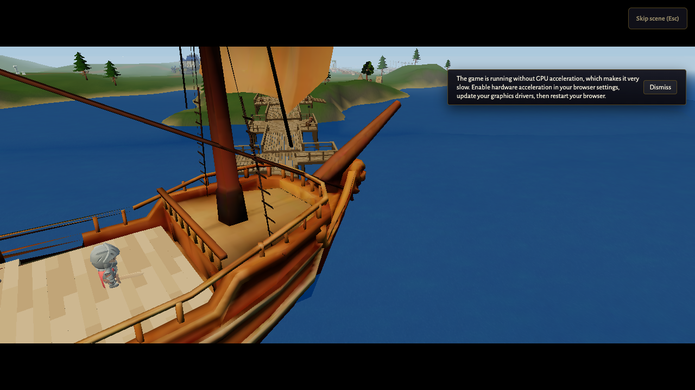
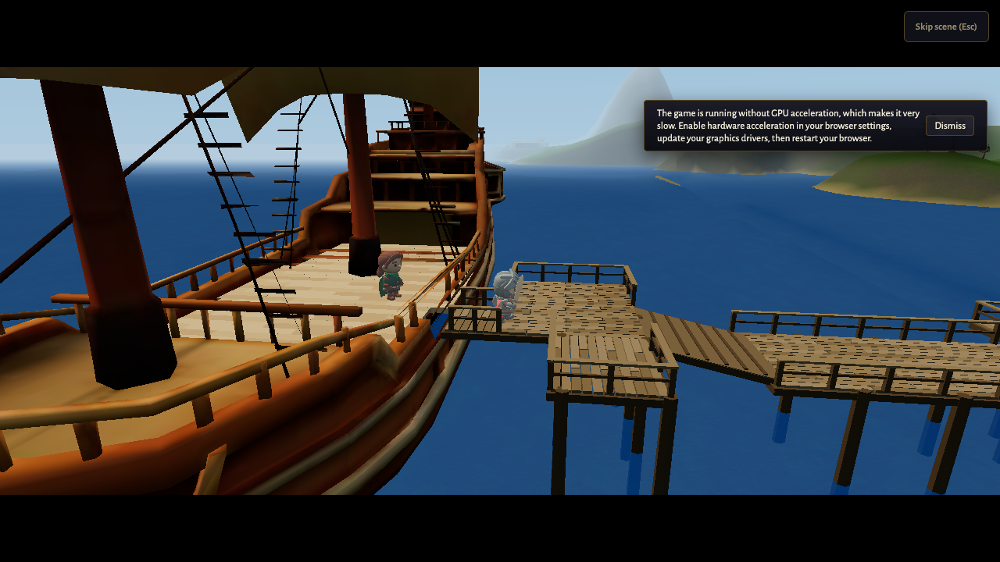
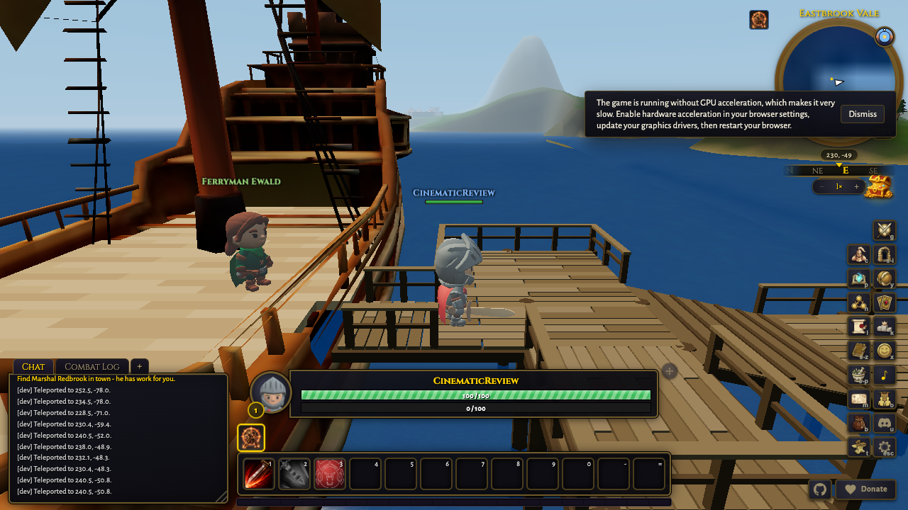
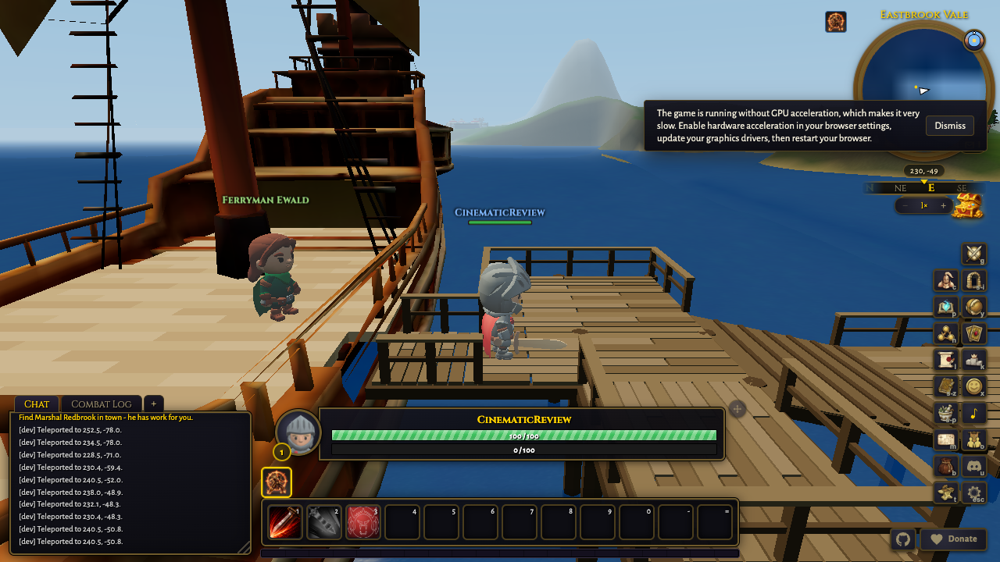

Target 3.675s
Measured 3.8s
Cut window 1.05s to 6.3s. camera cut at 1.05s

Target 9.15s
Measured 9.15s
Cut window 6.3s to 12s. camera cut at 6.3s

Target 15.525s
Measured 15.7s
Cut window 12s to 19.05s. camera cut at 12s

Target 22.675s
Measured 22.8s
Cut window 19.05s to 26.3s. camera cut at 19.05s

Target 27.15s
Measured not available
Cut window 27.15s to 27.15s. after scene end

Target 28.15s
Measured not available
Cut window 28.15s to 28.15s. HUD restored